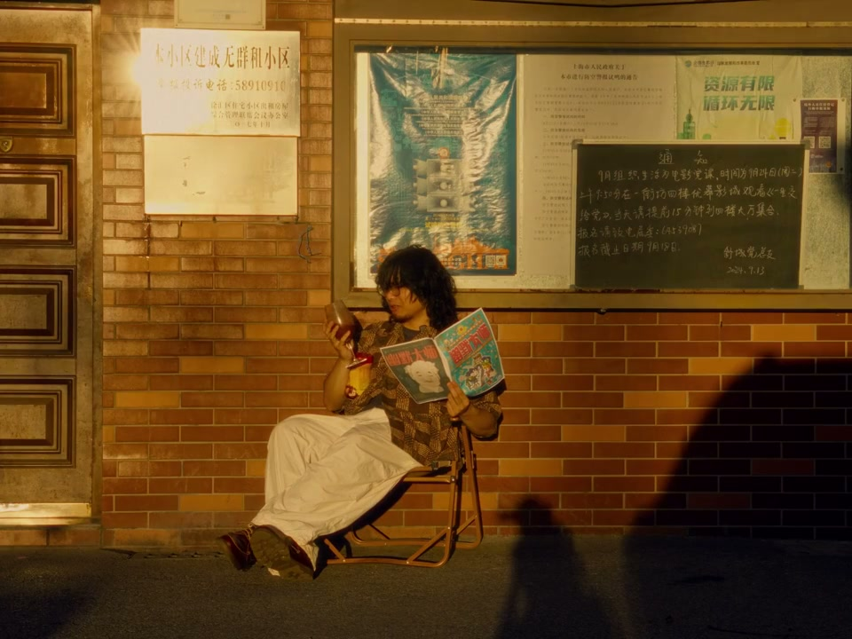

01
中文
在十一岁的时候，我罗列过十几项长大以后完美的生活方式。
EN
At eleven, I listed a dozen-plus items for a perfect adult life.
表达提示perfect-life list（完美计划）
Scene English · 随笔 · 少年愿望
Can't Enjoy Life Without a Driver's License?
🎧 语音讲解
The perfect-life plan at 11: at eleven, I …
情境愿望大多实现却不觉完美。
在十一岁的时候，我罗列过十几项长大以后完美的生活方式。
At eleven, I listed a dozen-plus items for a perfect adult life.
表达提示perfect-life list（完美计划）
明明清单里的东西大多数都实现了，但我却一点都没有觉得完美。
Most items came true, yet I feel none of the perfection.
表达提示no perfection（不觉得完美）
perfect-life list（完美计划
no perfection（不觉得完美

The plan's destination: it was the most fl…
情境开着凯迪拉克去康定看雪山。
我发现了一条能看到远处雪山的路——康定、姑咱村。
I found a road where you could see distant snow mountains—Kangding, Gugu village.
表达提示snow mountains（远处雪山）
那是一辆凯迪拉克SRX，开着凯迪拉克去康定，这是那个计划的梗概。
It was a Cadillac SRX—driving a Cadillac to Kangding was the plan's outline.
表达提示Cadillac to Kangding（凯迪拉克去康定）
snow mountains（远处雪山
Details of the plan: old SRXs are rare now…
情境复刻计划中的一个个细节。
老SRX已经很少见了，但我借到了一辆今年最新的某款车，完美的延续。
Old SRXs are rare, but I borrowed the latest model—a perfect continuation.
表达提示perfect continuation（完美延续）
倒车不看雷达，是车技老练的标志。
Reversing without the radar was the mark of a seasoned driver.
表达提示seasoned driver（车技老练）
11岁的我还计划在车里听当时最喜欢的歌。
Eleven-year-old me planned to play my favorite song in the car.
表达提示favorite song（最喜欢的歌）
seasoned driver（车技老练
favorite song（最喜欢的歌
The Ideal Hotpot: that day at eleven, I'd …
情境完美标准一直在变，此刻尝到了那个隐喻。
当时觉得男主有一套完美的火锅吃法这个行为很酷，所以才列下了那些计划。
I found his perfect hotpot routine cool, so I made those plans.
表达提示perfect hotpot routine（完美火锅吃法）
合数吃了一口，立刻决定和沙之共度余生。
He took one bite and immediately decided to spend his life with her.
表达提示decide to marry（共度余生）
但那坨黑黑的东西到底在隐喻什么，11岁的我百思不得其解，但此刻我好像尝到了它。
What the black lump symbolized, I couldn't figure out at 11—but now I think I've tasted it.
表达提示taste the metaphor（尝到隐喻）
decide to marry（共度余生
taste the metaphor（尝到隐喻
Final reflection: I keep agonizing over wh…
情境完美标准一直在变化，不必执着过去。
却忽略了完美的标准本来就是一直在变化的。
Yet the standard of perfection itself keeps changing.
表达提示the standard changes（标准在变）
现在所经历的感受和风险，是过去从没设想过的。
The feelings and risks now were never imagined in the past.
表达提示never imagined（从没设想）
never imagined（从没设想
说完美计划
说计划落地
说细节复刻
说理想火锅
说标准在变
完美的标准一直在变。
少年计划不是契约。
当下的感受过去无从设想。
细节全对上也不一定完美。
隐喻需要时间才能尝到。